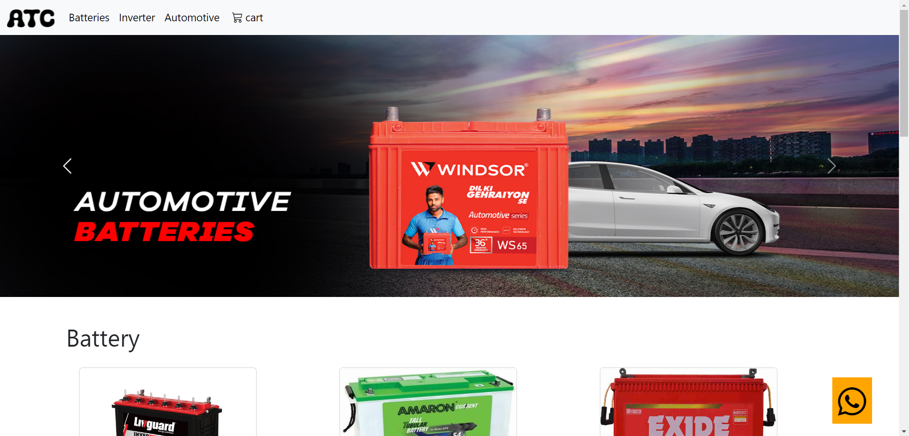

Product Experience
Organized products into clear categories and product grids to support browsing and discovery.
PERSONAL PROJECT · WEB DEVELOPMENT
A product-focused e-commerce website built around a real business use case, making automotive batteries, inverters and related products easier to browse and explore.
OVERVIEW
ATC is a product-focused e-commerce website created for Arora Trading Company, giving customers an organized way to explore automotive batteries, inverters and related products.
The interface is structured around product categories and straightforward navigation.
Customer interaction points include the shopping cart, WhatsApp contact, location information and a contact form.
MY ROLE
Organized products into clear categories and product grids to support browsing and discovery.
Structured the interface to provide a consistent experience across different screen sizes and layouts.
Created clear navigation across Batteries, Inverters and Automotive categories.
Included contact, location, WhatsApp and form-based interaction points.
INTERFACE

USER FLOW
Discover the business and product categories.
Explore products through category-based listings.
Use the available product and contact options.
Reach the business through contact, WhatsApp or location information.
TAKEAWAY
This project strengthened my understanding of frontend development, responsive design and translating a real-world business requirement into an interactive web experience.
It also made me think more about how navigation, product presentation and interaction points shape the overall user experience.
EARLIER WORK / NEXT